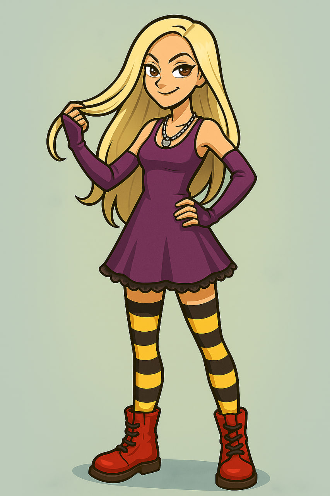

What does my avatar look like? Well, she looks a bit like me but she's a bit taller and slimmer and she's got long brown hair and blue eyes.
What is she like? When she's in her virtual world, she usually behaves like me. She's an alternative and rebellious kind of person, just like me.
She likes really cool black clothes and silver jewellery and she likes going to concerts and hanging out in cool places in the virtual world, like the coffee shops on Bora Island.
